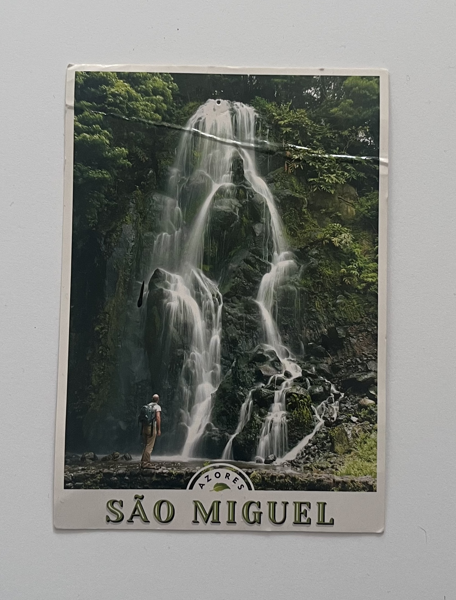

Pieces of Sao Miguel

In June of 2024, I visited São Miguel, an island in the Açores off the coast of Portugal, with my mom for the first time, becoming the most influential trip I’ve taken. I spontaneously booked the trip two months prior, and was ecstatic to see my family for the first time in 10 years. My mother and I arrived in Portugal in mid-June and returned to Canada on July 01.
In these two weeks, we had the incredible opportunity of exploring practically every square inch of the island for free, courtesy of my mom’s cousin, who has lived there his whole life. We were able to visit parts of the island that were off-limits to tourists and only accessible to people who live there. This trip changed my perspective on everyday living, travelling, and tourism. I found this trip was important in understanding the places we visit and how we treat and view them.
I am so grateful that I got to live my life in a new way, even though it was temporary. I enjoyed learning a new way of life, one that is slower-paced, less worrisome, and one that appreciates the little, simpler things of everyday.
My mother and I stayed in her father’s childhood home, which is now owned by her cousin’s family, taking care of their seven-year-old son and my great uncle, who battles Parkinson’s disease. This trip taught me the importance of family and the sacrifices made daily to take care of one another. If my mother and I had not stayed with her family and spent our time in a hotel, resort, or Airbnb, and gotten a rental car — like most tourists — our experience would have been entirely different, and I would have missed out on much of my family’s history.
From this trip, I have learned to be more cautious with how I interact with the places I visit, while understanding cultural traditions and norms different from life in Canada, allowing me to gain a new perspective on living. I left a piece of myself in São Miguel that I hope to revisit soon and continue to learn more about my heritage.
I have yet to travel outside of North America. My dream is to tour Europe. When Charlotte booked this trip last year, close to the end of exams and her birthday, I was so excited. I knew that this was an opportunity for her to connect with her heritage firsthand, a beautiful and rare experience. The pictures I saw from this trip were outstanding. Every image was overwhelmed by the natural surroundings, filled with green leaves, plants, flowers, waterfalls, and dirt.
My favourite part about this trip, although not mine, is the thoughtful gifts that I received when she got back. Including this postcard, a few other trinkets, and my most favourite dessert-- queijadas, a Portuguese custard cupcake straight from the motherland. They arrived home with a whole box in time for my birthday in June.
Artifact Metadata
| Type | Description |
|---|---|
| Name | Sao Miguel Postcard |
| Collection | Ephemera > Postcards |
| Origin | Sao Miguel, Portugal. Given by my friend. |
| Date | June 2024 |
| Location | Sao Miguel, Portugal |
| Condition | Used |
| Description | Green and White postcard from Sao Miguel, Portgual. Depicting a man staring at a grand waterfall surrounded by lush greenery. |
EP-AZ-SM2
I look at this waterfall and I can almost hear the persistent, heavy hum of the water hitting the rocks. This postcard isn't just a souvenir; it's a reminder of that specific kind of quiet I found in the Azores. I remember standing there, feeling remarkably small against the green scale of the island.
The crease across the top happened when I shoved it into my bag in a hurry, a small scar from the journey itself. It’s a bit weathered now, but that feels right. It mirrors the way the trip stays with me—not as a pristine, polished memory, but as something lived-in, tactile, and slightly rugged.
Artifact Metadata
| Type | Description |
|---|---|
| Artifact ID | EP-AZ-SM2 |
| Title | São Miguel, Azores Postcard (Waterfall) |
| Category | Ephemera / Travel Documentation |
| Origin | São Miguel Island, Azores, Portugal |
| Physical Description | A rectangular printed postcard featuring a vertical photograph of a lush, cascading waterfall over dark volcanic rock. A lone figure with a backpack stands at the base, emphasizing the scale of the falls. The bottom margin contains the text "SÃO MIGUEL" in a serif typeface with a circular "AZORES" logo. |
| Condition | Distressed; significant horizontal creasing across the upper third of the image and some minor edge wear, suggesting it may have been tucked into a guidebook or travelled in a pocket. |